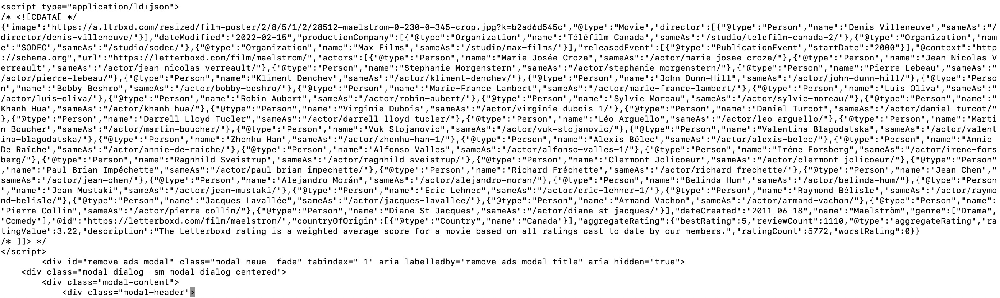
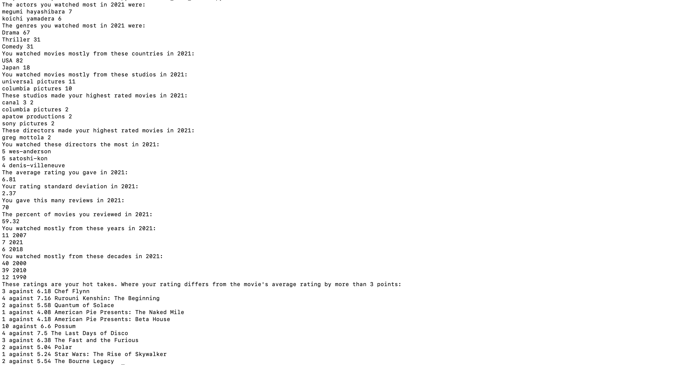

Letterboxd 2021 Wrapped Part 1: The Database Statistics
Posted on February 15, 2022.
This is the first coding project I’ve done in quite some time. The code has had many iterations through refinement as well as cleaning and will continue to be refined and cleaned. This post will document features found in the first draft: primarily Python code which serves to populate our user’s database, the movie database, and generate the overall statistics for a given user. While I have experience with SQL and Python, this was my first time using SQLite and Beautiful Soup. With this inexperience noted, it is apparent at times that the code has potential to be made more efficient and robust. These concerns will be addressed in a later part, with the general parts going forward being 2. hosting on a website, 3. design output and include graphics, 4. increase efficiency and robustness of code, and later parts to be determined.
The overall goal of this project was to make an analysis of data for a user on Letterboxd, a movie rating website and app. Letterboxd has their own 2021 review of a user’s data but only provided a few details to the users. Those were the number of films logged, the number of films reviewed, the hours watched, a most watched actor, director, and 3 highly rated films. I knew there were more analyses that could be provided based on the Letterboxd data, and inspired by 2021 data reviews, popularized by Spotify, I began to wonder if I could make my own. Another inspiration was https://favoritemusic.guru/ which is a site that simply calls Spotify’s API for a user and presents the data.
Before diving too deeply into technicality, let’s discuss Letterboxd’s format. It’s a relatively straight forward website. A user has a profile: they can mark movies as watched and rate or like them, they can say whether or not a movie was rewatched or watched for the first time, and they can also write reviews of movies. A movie can be marked as watched without being added to the user’s “diary”. The diary logs all movies watched with a specific date time. The watched page is more of an unordered set without date consideration. Movies themselves have some details, possessing obvious features like a title, description, year, director, actor list, but also have average ratings, the number of users who have watched, a number of reviews, a count of how many people liked it, as well as genres, crew members, etc. In my search, I noticed how small a company Letterboxd was and I think it’s appropriate to note what an excellent job this team has done on the website and app
I looked into accessing Letterboxd’s API but it seems to be, at the time of development and writing this blog post, in testing. With the API not accessible, I had to turn to web scraping, which I have no experience with. I quickly found an API called Beautiful Soup, which would serve to pull the HTML of a given page. Looking at Letterboxd’s HTML I was happy to see it was well organized and well documented. Immediately going to the diary pages I tried the first step of the coding process — to simply pull the HTML, and it worked with ease. Digging through it I noticed that the diary pages had all the information embedded on it that I would need. I had been worried that I’d have to go to each individual movie’s review (a separate page) and parse out the user’s review, rating, etc. but fortunately it was all right in the diary’s HTML.

This is an example of a few lines from the diary page, and specifically these lines identify a single movie’s entry on that page. Looking through it you can see a lot of details and variables, but everything important that I wanted to scrape seemed to be here. I jumped into coding it and was getting some raw data and I hadn’t planned on how, or what exactly, to store. To be frank, I was excited that I had just pulled the HTML and had data so I just began coding, but at this point I would have been better off pulling back and writing out some high level documentation about the program. I had to continually come back to this fundamental structuring throughout the process of development because I had not planned thoroughly enough. I won’t get too explicit here with the details.. but the code was bad. Let’s just get into what the format of the code is now, and the logic behind it, again noting that this is a first draft.
Now that we have massive data we need to consider how to parse the data, and then how to store the data. Parsing shouldn’t be too bad, Python has some good features and some bad features, and I think that one of Python’s good features is the ability to implicitly handle data types and parsing well. I’d just need to hack out some functions to get the data points. The logic here is conceptually simple and highly dependent on the HTML’s documentation. The lowest block of text in that image shows it. That has more than enough data points than what I want, all contained within a single flag, which has a specifically named class. We parse the HTML by class “edit-review-button …” and have a list of those, and from there we can use Beautiful Soup again to parse out the tags based on their name, so you could search for “data-film-year” and get that whole line. As simple as that, we now have our data points for every movie on the diary page. Let's take a look at that first draft code. I will reference the github here.
We first begin by creating the user's database if it doesn't exist by calling create_user_db(username). This will create our table titled [username]_diary which has columns for a movie's title, year, rating, review, rewatch, view, view string, poster URL, and expected URL. View string defines the date the movie was entered by the user and expected URL is what we can expect from the movie's page's URL, independent of the user's page.
Initially I had wanted to generate the URL from the movie's title, but titles with special characters offered challenges. Not only this, but a movie with a repeat title will need to specify a year in the URL to be distinct. I decided to just scrape out the URL here instead.
Another issue here was getting all the diary pages. A user can have anywhere from a single to multiple diary pages, the first with a standard URL, and the rest with an integer appended. At first I was getting all diary pages by checking integers until I got an error pages. Not efficient. I decided to then parse out the integers at the bottom of the diary page that specified which pages you could navigate to. This worked fine until I tested with a user who had 45 pages, and the integers were "2, 3, ..., 45". I decided to parse out the largest integer, and then generate the other URL's. This seems to work well so far and is what get_diary_pages(url) does.
The diary pages are called and used by the get_all_watched(username) function, which will return all page info we need and is subsequently formatted by format_watched(a) for a SQLite query and populated into the user's database by populate_diary_sqlite(s, username). The final step is to ensure there are no duplicates, which should be built into the code, but I decided to move on and save that for a cleaning session. For now delete_duplicate_rows(table_name) will delete all the duplicates.
From here the next part is populating the movie database. Looking through the HTML of a movie's page we can find the relevant sections we would like to scrape. One section begins with the phrase "CDATA" as shown below. We can parse that out and have that be some amount of information that we need. The other info we will need to search for mannually.

Referencing the code here we can see the functions. We create the database if it doesn't exist, get URLs from a user's table if they don't exist in the movie database, and then populate the table with the raw HTML code. I wanted to add this raw data in an attempt to tier the tables, that way processing from the raw data could be delimited into its own program. The other lines we grab are HTML code that specifies the movie's description and image.
The section of code which parses that data is here. It creates the t1 movie data table if it does not exist and will prase the t0 movie data table into it. The bulk of this program is in the parse_movie_info(info) function. It pulls out relevant information and formats it appropriately into lists or entities that are later formatted for SQLite execution. There isn't a lot here aside from string manipulation.
With both the movie info table and user diary table completed, we can focus on statistics. get_stats.py functions to run the previous programs in the proper order, whereas create_user_tables.py serves to get the actual statistics after the table instantiation and updates. It will simply print them out. The reason it is called "create user tables" is because I had thought the output will best be formatted into some table that can be pulled from and displayed directly onto a webpage. Whether or not that is the correct route will become clear once I begin to build out the website.
Here is an image of my statistics:

There are still mild bugs I would like to look into and formatting errors that I am aware of.. One is that some studio names have integers at the end of them, another is that it can be easy to see many actors that have minor roles in films, and they may be identified as "most watched" actors. A very annoying bug is that multiple runs yield very slightly different results. I imagine this may be attributable to me running the code so often as I put the finishing touches on it but I cannot rule out bugs.
This has been an easy project with a fun output. As I said before, this next step will be hosting the code on some website. As I begin diligence it seems to me that flask will be the main workhorse. Another API that I have no experience with. I look forward to continuing this work and trying to get a clean final product on a site.